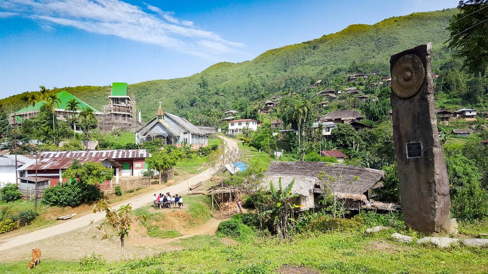
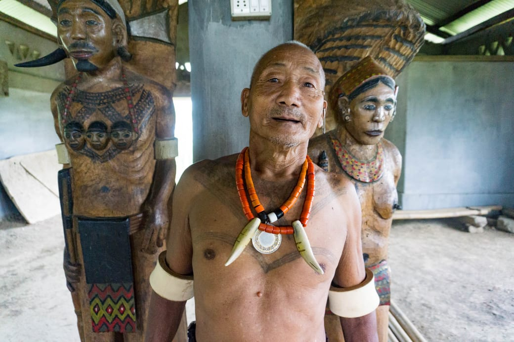
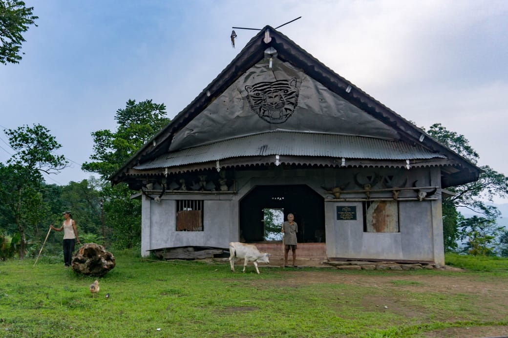
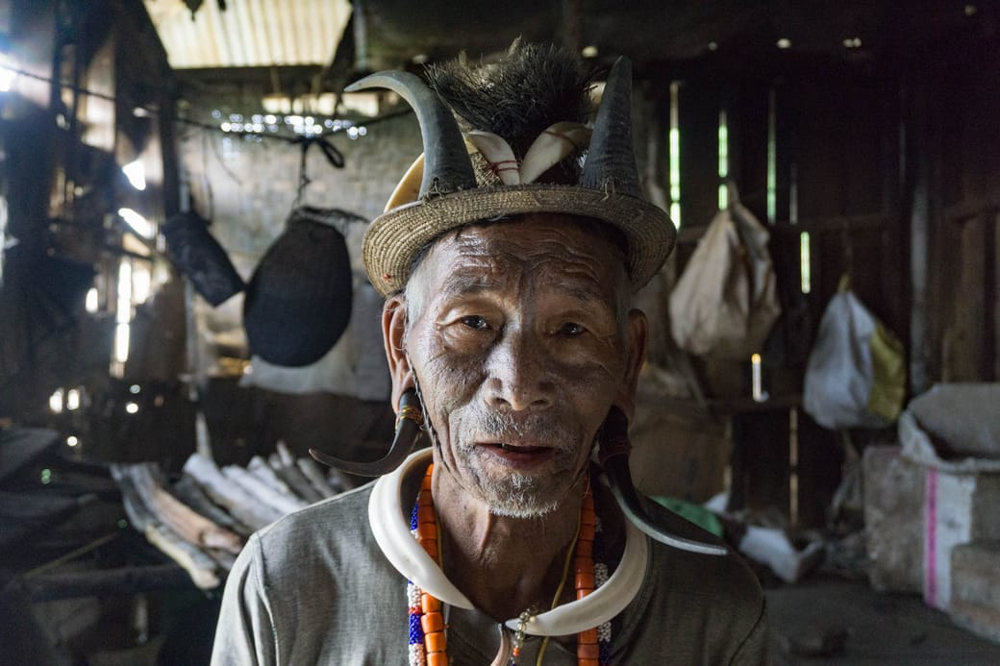

I really didn’t know what to expect as I made my way into Hongphoi, a small village of notorious headhunters in North-East India. The adrenaline was surging in my blood as I got closer to the bamboo houses. Some villagers greeted me from afar with enthusiasm, raising their straight sickles in the air. In those remote mountains of Nagaland close to the Indian border with Myanmar, I noticed the change in people’s ethnicity and the thinning of people’s eyes.

As I pushed my bike into the village, I found the village’s Morung, a large war-ceremony building on top of a hill with a carved monolith. Two young men soon came towards me and offered to show me around. I was relieved to have found a point of entry to that yet unknown and mysterious tribe. They immediately called the village elders to come and greet me. That’s when I saw them: two of the few remaining legendary headhunters. They introduced themselves as warriors of the Konyak tribe. They were both over eighty years old. Our interaction was mediated with the help of my two new friends, who were native to the village but who had studied English in Kohima, a larger city in Nagaland.

Konyak Headhunter in Hongphoi
“How many men have you killed”, I asked. “Three”, said the first with obvious pride. “Two”, said the other. “How did you feel when you took their head off?” “Like an animal”, he replied.
The Konyak people have an age-old tradition of painting tattoos on the head or chest of successful headhunters. It was to be a lifelong testimony to their courage and fierceness in battle. There was a strong rivalry between the neighboring tribes in the region as each competed for land and resources, and no central king or governance united them. “The men of the village would join up some morning for a raid on the tribe behind that hill”, explained one of my companions.

and beat the logdrum after a successful raid
The headhunting practice has been abandoned with the advent of Christianity in the latter half of the 20th century, as the enmity between tribes dissolved. Today, the surviving headhunters have become a tourist attraction for the few international tourists make the distance from the heartland of India to the remote villages of Nagaland.
The pace at which the Naga villages have changed their beliefs and customs is astonishing. Within two generations, virtually all inhabitants of the Hongphoi village have transitioned from traditional animism to embracing the christian doctrine. And the change is far from coming to a halt. The Konyak millennials are now drawn to the big cities to learn English and abandon the agricultural lifestyle of their parents. One of the few but impactful changes that modernity brought to Nagaland are smartphones and satellite TV. The same families which merely fifty years ago used to prepare a raid to neighboring villages are now spending the evening watching “Breaking Bad” or “America’s next supermodel” plays on the screen.

Better watch those than to impale your neighbor’s scalp on a stick, you might say. Judging from the people I met, the Konyak people themselves seem to look back on their headhunting past as a primitive barbarism, and praise the change brought by western christian values. But modernity brings a more subtler issue, too. Along with hundreds of others I have encountered on my trip, these villages undergo the phenomena of digitization and uniformization of culture, whereby physical and oral traditions passed down from generations leave way to the productions of the American or Indian entertainment industries.
One must not travel far in rural areas of the world to realize that we are losing local languages, traditional knowledge and customs at a distressing speed. While modernization is a force we cannot stop, understanding the two sides of its effects will help us nuance the vision of our techno-evangelism, and implement it in a more thoughtful manner. For example, projects like Google’s Loon and Facebook’s Free Basics aim to provide free internet for everyone in less connected areas of the globe. They are almost exclusively focused on facilitating the consumption of internet content from the outside world. We should however also think about promoting tools for the creation of content from the inside world of those people, such as for creating websites and videos. This way, we level the playing field for traditional content and prevent it from getting drowned under the stream of outside information. We might want the world’s information to solve issues like poverty and headhunting, but do we want Netflix to replace the myriad of languages, dances and tales that constitute our human heritage? The decisions we take today will determine what will be left to the generation of tomorrow.